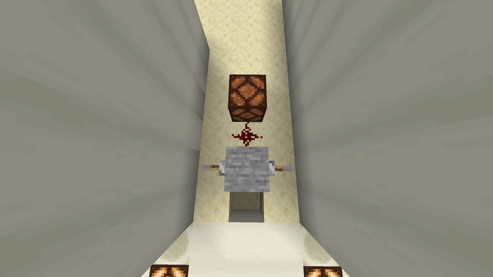

OR gate

Sed sodales elementum fermentum. Ut augue libero, viverra quis magna eget, rhoncus lobortis tellus. Nam a metus sollicitudin, euismod odio sit amet, hendrerit mauris. Sed pretium semper quam, sit amet cursus nulla volutpat sit amet. Praesent laoreet mattis sollicitudin. Vestibulum et aliquam felis, eu rhoncus nisl. Suspendisse nulla dui, rhoncus nec ante sit amet, tristique pretium nisi. Etiam pulvinar ac est sed ultrices. Nunc pulvinar ligula nisl, in sodales magna interdum nec. Vivamus vulputate sapien at metus fermentum tincidunt.
History
Quisque aliquam quam ut neque ultrices venenatis. Vestibulum ante ipsum primis in faucibus orci luctus et ultrices posuere cubilia curae; Nulla facilisi. Duis maximus, lacus nec aliquet condimentum, odio dui dignissim eros, at rutrum quam nisi sit amet ante. Nulla pulvinar hendrerit condimentum. Maecenas in lacus semper, hendrerit nisl non, rutrum lectus. Proin ac lacus elementum, congue neque interdum, ullamcorper magna. Suspendisse tincidunt sem mauris, eget rutrum augue blandit ut. Cras scelerisque urna ipsum, et hendrerit libero lobortis ut. Sed interdum venenatis nunc, sit amet sagittis elit molestie quis. Donec scelerisque gravida risus a elementum. Vestibulum scelerisque dolor at risus vehicula, ut tempus tortor condimentum. Etiam sed sapien dictum, hendrerit neque id, finibus mi. Vivamus id posuere justo. Vivamus viverra id dolor ultricies fringilla. Morbi et tortor a ante volutpat bibendum. Aliquam sodales est eros, eget mollis dui vehicula a. Pellentesque laoreet, quam eu interdum aliquet, nisi ex accumsan diam, eu mollis orci dui sit amet libero. Donec quis tempus lectus. Maecenas nec varius felis. Nunc metus quam, efficitur a tortor aliquam, placerat auctor nisl. Duis consectetur ut lectus ac rhoncus. Phasellus eu ante et tortor tempor scelerisque. Sed et nunc eu magna semper lobortis sit amet tempor justo. Sed suscipit nulla a enim sodales facilisis. Suspendisse ut ultricies enim. Aliquam vitae sem eget sapien facilisis dictum.
| Input | Output | ||
|---|---|---|---|
| A | B | ||
| 0 | 0 | 0 | |
| 1 | 0 | 1 | |
| 0 | 1 | 1 | |
| 1 | 1 | 1 | |